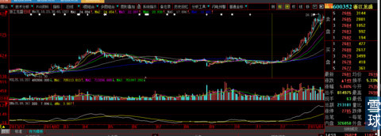
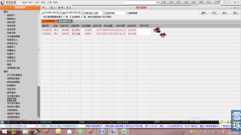
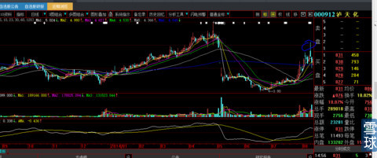

看来是天意，就算了。
1、看了一下评论，sox404发言是正常的，我看不出哪里有不对。
2、看了另外一个写到：“怎么昨天卖出“海润光伏"帖子删除了呢？哦，看错了就删除呀”？
我在研究她入粉时间，看出不是刚刚新来一周的新粉，她明明看了我昨天挂到今天专门写的一个针对性的帖子，张扬的自我宣传：看看，我不也还是照样看错呀，自己出自己的洋相竭自己的短（提也没有提我是什么时间、地点、要求什么价格买入，半个月不到涨幅50%之类的半句自吹自雷）？
可见她这个女人之可恶到极点，关键是“其心可诛”！老子立刻拉黑她。
以上闲话，下面说正事。
1、任何一个股票要翻倍，从底部走出来，快庄股至少也需要2个月，何况我们满仓买入的闰土股份和浙江龙盛，都是买在启动的前一天。闰土股份18.7元买入到今天才12个交易日。大家就讨论的勒热火朝天，狗肚子藏不住二两油。说实话，我能在帖子里开始这样放肆的谈论它，也是基于它不得不翻倍的大局已定，是靠市场的气势而非庄股的运作难得一见金股任何人无法更改的原因才写出下面这些话。这种情况并不是每一只股票都可以这样的，这样品种的机会每年大部分时间是不多见的。就像“佳电股份”去年那样典型的独往独来庄股，我可能敢在这里大肆公开的讨论吗？所以，持有的人耐心点，要有赚大钱的雄心壮志，怎么的也要为这一辈子在人前有一次机会可以骄傲地说：我在一只票上一个月赚到1倍。看看你老婆会用什么崇拜的眼神看着你？人要活的有志气一点。
2、你们天天拿那么多的股票问我，我都很烦。为什么？你想啊，你说你手中有这么大的牛股，就像去年11月你们拿在手里的券商股，现在你回想，如果今天有人要你在12月初卖掉券商股，你现在会不会答应？怎么今天换成浙江龙盛和闰土股份，就这么多忐忑不安呢？不就是它还没有走出来嘛。你们说说，你们哪一个不是典型的、潜在的事后诸葛亮？我不回答你的选股，暗藏的心机就是想，你会明白：哦，原来心大是让我做龙盛和闰土啊，所以不回答我。就算你看浙江龙盛眼感涨得太高，那么闰土就没有这个眼感呀，你就是用耳朵去想：闰土的形态和均线的角度不可能有下调空间，那么浙江龙盛就更没有了啊！上周五浙江龙盛盘面上下飞舞，里面潜伏的大小散户、小机构大单卖出，是被大盘一会红一会绿吓破了胆。我们这里有“心大”坐阵，怎么能允许你们像他们那些“五心不定注定命贱运薄的人”一样？这一仗，你们一定要打胜，而且一定能够打胜，让你们自己使自己脱胎换骨一次。我在这里打的都是明牌，不让你们与我比自从去年11月以来仅仅3个月时间连续战绩的复利，你们中间的人就算最少中国建筑赚50%计算，100万本钱就是150万，再闰土翻一倍好了，就是300万，这就是复利的威力，前后才3个多月，还要怎么样？
3、就算你说你现在选别的股是为未来的战后做准备，你咋不想，等你闰土出来的时候，其他股票已经面目全非了。都是动态的，怎么可能刻舟求剑呢？那时候自然会冒出来新的品种啊。
4、我对朋友向来两肋插刀，上周四对同事小朋友说：你们今年奖金少，我来给你们发，你们2个人每人就算15万好了，超过之上全奖你们，之下我来补齐。我去股市帮你们提款去。
试问，你们摸着心口问自己：谁敢于面对这样的高耸入云的走势图形下单？

下图就是我为小朋友下单成交时刻图。25.14元

专门为2个小朋友单独开仓下单图。

富贵哪里那么容易？挣钱哪里会那么轻松？起码也要经历心理的煎熬吧？
你们说，我这种人会对那个贱人客气么？
海润光伏如果昨天走成下图画圈这样，那个傻女人会怎么说？
看到涨说涨看到跌说跌的贱货。
